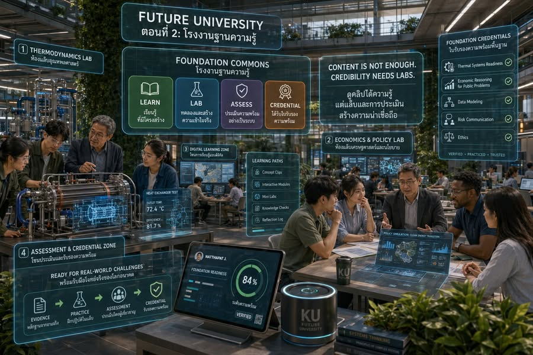

Foundation Commons: โรงงานฐานความรู้
{kind=link}

การบอกว่ามหาวิทยาลัยไม่ควรเริ่มจากรายวิชา ไม่ได้หมายความว่านักศึกษาจะไปดู YouTube เอาเอง YouTube ให้ข้อมูลได้ AI tutor อธิบายซ้ำได้ และหนังสือเปิดให้เรียนได้ แต่สิ่งเหล่านี้ยังไม่ใช่มหาวิทยาลัย
มหาวิทยาลัยต้องรับผิดชอบว่าผู้เรียนเข้าใจจริงหรือไม่ ใช้ความรู้ในสถานการณ์จริงได้ไหม รู้จักความคลาดเคลื่อนจากแล็บหรือไม่ ตัดสินใจภายใต้ข้อจำกัดได้เพียงใด และคนอื่นควรเชื่อถือความสามารถนั้นแค่ไหน
วิชาพื้นฐานไม่ได้หายไป แต่มันย้ายบ้าน
ใน Future University ความรู้พื้นฐานไม่จำเป็นต้องถูกห่อไว้เป็นรายวิชาประจำภาค แต่มาอยู่ใน Foundation Commons — โรงงานฐานความรู้ที่ดูแลเส้นทางเรียน แบบฝึกหัด แล็บ การสอบ การรับรอง และมาตรฐาน
คำว่าโรงงานในที่นี้ไม่ใช่โรงงานผลิตคลิป แต่คือระบบที่มีผู้รับผิดชอบทุกขั้น ตั้งแต่ผู้เรียนได้รับความรู้ ไปจนถึงสังคมมีเหตุผลพอที่จะเชื่อถือว่าเขาพร้อมนำความรู้นั้นไปใช้
จาก Thermodynamics สู่ Thermal Systems Readiness
Thermodynamics ยังอยู่ แต่ไม่ได้ถูกจำกัดเป็นวิชา 3 หน่วยกิต ผู้เรียนต้องเข้าใจ energy balance อ่าน property table ใช้ simulation ทำ heat exchanger lab วัดค่าจริง และอธิบายได้ว่าทำไมทฤษฎีกับเครื่องมือจริงจึงไม่ตรงกันง่าย ๆ
หลักฐานทั้งหมดรวมกันเป็น Thermal Systems Readiness ซึ่งผู้เรียนต้องผ่านก่อนเข้าไปทำโจทย์ cold chain, smart building หรือ energy system จริง ความพร้อมจึงมีความหมายกว่าการลงทะเบียนครบและได้คะแนนผ่าน
จากกราฟ Supply–Demand สู่ Economic Reasoning for Public Problems
Microeconomics ยังมีอยู่ แต่ไม่จบที่การวาดกราฟ ผู้เรียนต้องเข้าใจ incentive, externality, public goods, market failure และ fairness ทดลองออกแบบ subsidy จำลองตลาด วิเคราะห์ว่าใครได้และใครเสีย เขียน policy memo และดีเบต trade-off ระหว่าง efficiency กับ equity
เป้าหมายไม่ใช่ทำให้ตัวเลขสวย แต่สร้างความสามารถในการตัดสินใจในโลกที่ทรัพยากรจำกัด และคนแต่ละกลุ่มรับผลกระทบไม่เท่ากัน
เรียนด้วยตัวเองได้ แต่ระบบไม่ทอดทิ้งให้เรียนลำพัง
Provider รับผิดชอบคุณภาพเนื้อหา Lab Commons รับผิดชอบประสบการณ์จริงและความปลอดภัย Examiner Guild รับผิดชอบมาตรฐานการประเมิน Problem Cluster รับผิดชอบการนำความรู้ไปใช้ในโจทย์จริง และ Learning OS เก็บหลักฐานว่าคนคนหนึ่งผ่านอะไรมาแล้วบ้าง
นี่คือการแยกหน้าที่ให้ชัด โดยไม่ปล่อยให้ “เรียนเอง” กลายเป็นคำสุภาพของการโยนภาระทั้งหมดไปให้ผู้เรียน
คำถามใหม่คือ “พร้อมหรือยัง”
คำถามจึงเปลี่ยนจาก “เรียนวิชานี้ครบหรือยัง” เป็น “พร้อมหรือยังที่จะใช้ความรู้นี้กับปัญหาที่มีคนจริงได้รับผลกระทบ”
ดูคลิปครบไม่ได้แปลว่าใช้ความรู้ได้ ทำแบบฝึกหัดได้ไม่ได้แปลว่ารับผิดชอบผลลัพธ์ได้ และตอบข้อสอบได้ไม่ได้แปลว่าพร้อมเข้าไปอยู่ในทีมแก้ปัญหาเสี่ยงสูง Future University จึงไม่ใช่ online course platform ที่เพิ่มตรามหาวิทยาลัยไว้ด้านบน
หลังยุครายวิชา ความรู้พื้นฐานต้องพิสูจน์ตัวเองมากขึ้น
มหาวิทยาลัยหลังยุครายวิชาไม่ได้ลดความสำคัญของความรู้พื้นฐาน แต่ทำให้ความรู้พื้นฐานต้องมีหลักฐานว่าผู้เรียนเข้าใจ ปฏิบัติ ประเมินข้อจำกัด และพร้อมใช้กับโลกจริงได้
สิ่งที่เปลี่ยนจึงไม่ใช่ระดับความเข้มข้นของความรู้ แต่เป็นหน่วยที่ใช้จัดระบบ จากรายวิชาและชั่วโมงเรียน ไปสู่ความพร้อม มาตรฐาน หลักฐาน และความรับผิดชอบต่อผลลัพธ์
ตอนถัดไป สนามโจทย์เสี่ยงสูง เมื่อมีฐานความรู้แล้ว ผู้เรียนจะสร้างความน่าเชื่อถือจากโจทย์จริง ความเสี่ยงจริง และผลกระทบจริงต่อผู้คนอย่างไร